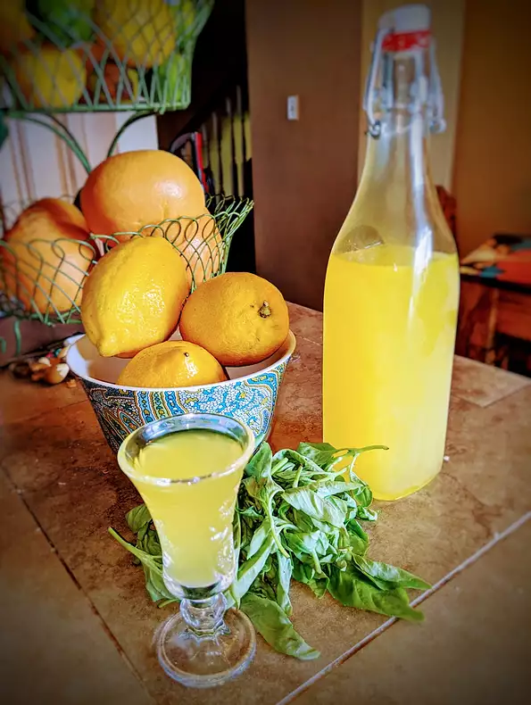

Home
Limoncello

Ingredients
- 10 lemons
- 1 liter vodka
- 3 cups white sugar
- 4 cups water
Steps
- Zest the lemons, and place zest into a large glass bottle or jar. Pour in vodka. Cover loosely and let infuse for one
week at room temperature.
- After one week, combine sugar and water in a medium saucepan. Bring to a boil. Do not stir. Boil for 15 minutes. Allow
syrup to cool to room temperature.
- Stir vodka mixture into syrup. Strain into glass bottles, and seal each bottle with a cork. Let mixture age for 2 weeks
at room temperature.
- Place bottled liqueur into the freezer. When icy cold, serve in chilled vodka glasses or shot glasses.